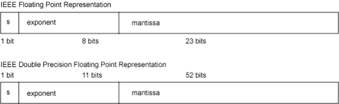

Representación en coma flotante (Floating Point)
El estándar IEEE 754 define las reglas, operaciones, representación, manejo de numeros
sin normalizar, como el infinito y el NaN (Not a Number), con números en este formato.
En coma flotante, se representan, en notación científica, un rango de números con precisión variable,
de forma compacta y eficiente a nivel de CPU. A continuación se detallan los subtipos de coma flotante,
así como su representación interna.
Presentación en coma flotante
Un número en coma flotante se presenta de la siguiente forma:
En la imagen se muestra el formato de simple precisión (Arriba) y el de doble precisión (Abajo).
- En simple precisión se reserva 1 bit para el signo, 8 para el exponente, y 23 para la base
- En doble prescisión se reserva 1 bit para el signo, 11 para el exponente, y 52 para la base
Tipos de coma flotante
La coma flotante puede representarse con distintos niveles de precisión , que se adecúan según las características del calculo que se realiza. Así tenemos coma flotante de precisión simple, doble cuádruple... En la siguiente tabla se muestran los principales tipos.
| Nombre | Bits de mantisa | Digitos en decimal | Bits del exponenete |
|---|---|---|---|
| Precisión media | 11 | 3.31 | 5 |
| Precisión simple | 24 | 7.22 | 8 |
| Precisión doble | 53 | 15.95 | 11 |
| Precisión cuádruple | 113 | 34.02 | 15 |
| Precisión óctuple | 237 | 71.34 | 19 |
Peculiaridades, exception handling y NaN (Not a Number)
- Hay valores especiales no numéricos (NaN, «not a number» en inglés) en los que el exponente es todo unos y la mantisa no es todo ceros. Estos valores representan el resultado de algunas operaciones indefinidas (como multiplicar 0 por infinito, operaciones que involucren NaN, o casos específicos).
- Hay valores diferentes para cero positivo y cero negativo. Estos difieren en el bit del signo, mientras que todos los demás son 0. Deben ser considerados iguales aunque sus secuencias de bits sean diferentes.
- El exponente no tiene signo; en su lugar se le resta un desplazamiento (127 para sencilla y 1023 para doble precisión). Esto, junto con la secuencia de bits, permite que los números de punto flotante se puedan comparar y ordenar correctamente incluso cuando se interpretan como enteros.
Además de los casos peculiares descritos arriba, el estándar define cinco tipos de errores, que constituyen el exception handling de coma flotante:
- Operación inválida: Ej.: Raíz de un negativo, devulve un NaN
- División por cero: Devuelve +-Infinity
- Overflow: El resultado es muy largo para mostrar, devuelve +-Infinity
- Underflow: El resultado es muy pequeño (De exponente cercano a 0), devuelve un numero subnormal
- Inexactitudes: Devulve el resultado redondeado